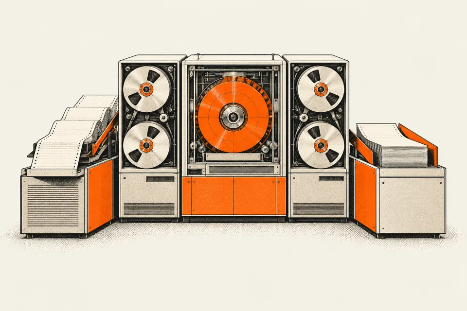

EXHIBIT 01 / AUTOMATIONINTERACTIVE STUDY

01ReceiveSource files
→02ValidateQuality checks
→03AssignTeam handoff
→04ReportReady to review
Ready to receive source files
automation / 01
Audit workflow
automation.
From fragmented steps to connected workflows.
Bring requests, validation and team handoffs into a single flow, with reporting at the end of the process.
Alteryx · Power Automate · Power Apps
THE APPROACH
Intake → validation → assignment → reporting
Behind the project
My work
Built automation pipelines with Alteryx and Power Automate, alongside Power Apps and web tools with embedded Power BI.
KPMG Saudi Arabia · Audit D&A
About this demonstration
The visual illustrates the approach. It is not a recording of a production system; dashboard figures are synthetic examples, not client results.